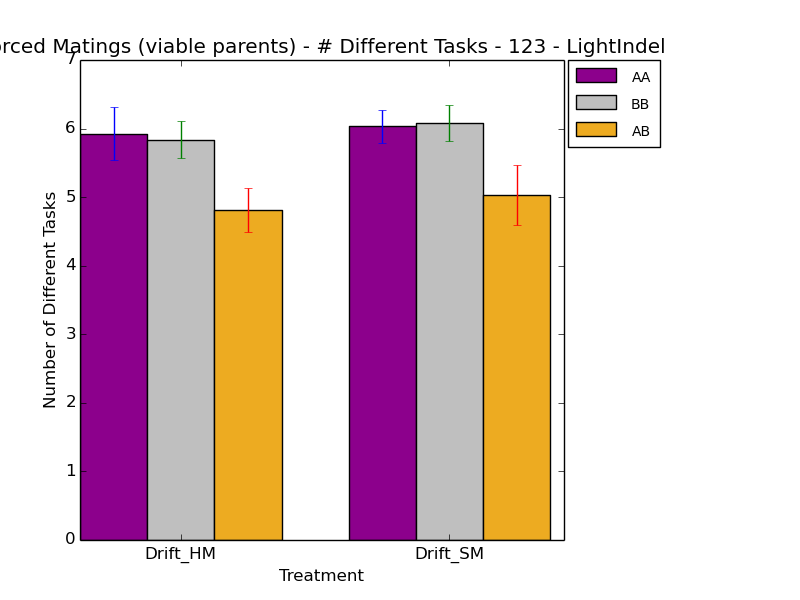
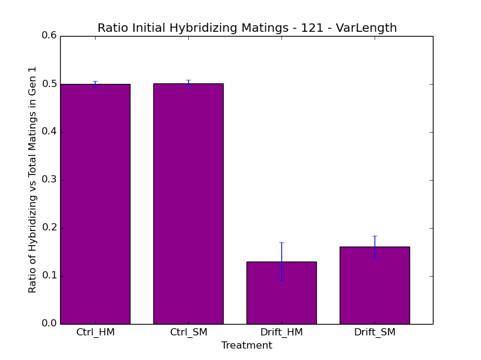
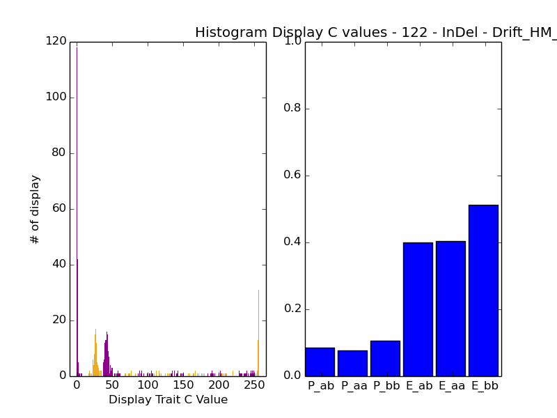
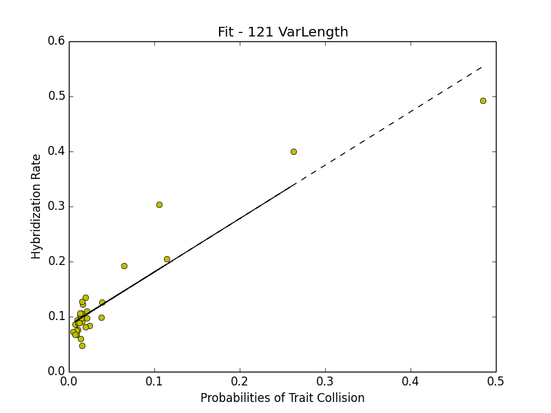

Right, so new week. Last night, I left it at trying to understand the effect of the DIV_IN/DEL mutation rate on the population, which seems pretty disruptive. I submitted some runs to get at this.
Separately, I started thinking about how to evaluate the similarity of the trait selection values (the histograms of female choosy display_c) between the paired allopatric populations. I considered several options:
So, what I'm REALLY trying to get at is the average probability that an organism from a given population will mate with an organism from the other population.
So, I want to get at is what the probability of an organism getting to mate.
https://people.richland.edu/james/lecture/m170/ch05-rul.html
Probability of an organism having a given trait P(t):
The organisms can't have more than one trait, but they must have 1 trait, so all the probabilities MUST add up to 1.
Right, so what about the organisms on the other side? (http://en.wikipedia.org/wiki/Joint_probability_distribution)
Fine, but what about an overall measure of the joint probabilities?
Can I take the mean? It's a distribution, right? But, it's not really normally distributed...
Or should I just sum the individual joint probabilities? Because I'm trying to get the overall probabilities of a given organism from population A mating with a given organism in Population B, which is the P(t1ab) or P(t2ab) or P(t3ab), etc.
So! The sum of the joint probabilities! :D YES YES YES
Software-wise, trivial. Going to make a little script now. :D
So, I put together the script to compare a couple distributions. The results weren't quite what I was expecting. The probabilities of distributions A and B resulting in a given mating were definitely lower than A to A, vs B to B, but AA and BB were both quite a bit lower. :? I don't really know how to interpret. I mean, in hindsight, yes, because the organisms aren't in heterogenous mating environments, a single organism has to contend with a variety of probabilities that make any given random mating encounter probably result in a failure. But if you're dropped in an environment that's different from yours, you're less well adapted for mating, so duh. But, how do I show that collectively for a run, so I can get a picture of the effect that that allopatry is having in general?
Ok, I finished the script, so that it can pull in values from the files.
caninoko@dev-intel14:~/mate_discrimination/output/121_NonFixedLength_HardAndSoftMatch/Drift_SM_120001$ python ~/research_scripts/analysis/joint_probability_distribution.py -s " " *2a/choosy*dat *2b/choosy*dat
caninoko@dev-intel14:~/mate_discrimination/output/121_NonFixedLength_HardAndSoftMatch$ roots=( Drift_HM Drift_SM ) for root in ${roots[@]} do rm ${root}_joint_probability.csv for k in ${root}_??????; do if [ -e $k"/"*_step2a/mating_display_c_histogram-300000.dat ]; then if [ -e $k"/"*_step2b/mating_display_c_histogram-300000.dat ]; then echo $k; cd $k/*_step2a/; tail -1 mating_display_c_histogram-300000.dat | cut -d " " -f 6- > choosy_female_2a-300000.dat cd ../../; cd $k/*_step2b/; tail -1 mating_display_c_histogram-300000.dat | cut -d " " -f 6- > choosy_female_2b-300000.dat cd ../../; python ~/research_scripts/analysis/joint_probability_distribution.py -s " " $k/*2a/choosy*dat $k/*2b/choosy*dat >> ${root}_joint_probability.csv fi fi done done
Had my meeting w/ Charles. He's sick, so we chatted over gchat.
So, yeah, that went well. Some important points.
Futzed until around 6, had dinner w/ Kendall (Sindhu takeout), then spent time printing and folding the new paper lab notebook. I modified Signature10 to add last week's notebook, which I don't expect to change. I'll add another signature to the book as I go and when I get enough more than 5, I'll pull them out and start a new book. It's important to me to have the latest work available to me.
Made some updates to noodle to add a button for filling in the date and log times. Easier. Uploaded to github.
Ok, what's next?
caninoko@dev-intel14:~/mate_discrimination/output/123_NonFixedLength_HardAndSoftMatch_CopyInDels$ ../../scripts/11_17_analysis.sh "123 - LightIndel" 123 caninoko@dev-intel14:~/mate_discrimination/output/123_NonFixedLength_HardAndSoftMatch_CopyInDels$ ../../scripts/11_22_analysis.sh "123 - LightIndel" 123

Ok, so, to be clear, here's the output from 121 (very little INDEL, only algorithmic) vs 123.

caninoko@dev-intel14:~/mate_discrimination/output/120_LongRuns_HardAndSoftMatch$ ../../scripts/11_17_analysis.sh "120 - LongRuns" 120 caninoko@dev-intel14:~/mate_discrimination/output/120_LongRuns_HardAndSoftMatch$ ../../scripts/11_22_analysis.sh "120 - LongRuns" 120
And for clarity, here's the long runs compared to the short indel runs and the original short runs. (the key columns to look at are the HM columns on the left, and the Control and Drift columns on the right).
Worked on the Joint Entropy stuff
plot_displayc_histogram() {
for k in *;
do
if [ -e $k"/"*_step2a/choosy_female_2a-300000.dat ];
then
if [ -e $k"/"*_step2b/choosy_female_2b-300000.dat ];
then
echo $k;
cd $k;
# python ~/research_scripts/graph_generation/mating_probability_from_csv.py -t "Histogram Display C values - ${description} - $k" \
# -x "Display Trait C Value" -y "# of display" --xlim_min -10 --xlim_max=266 -s " " displayc_histogram_entropy.png \
# *2a/choosy*dat *2b/choosy*dat
python ~/research_scripts/graph_generation/mating_probability_from_csv.py -t "Histogram Display C values - ${description} - $k" \
-x "Display Trait C Value" -y "# of display" --xlim_min -10 --xlim_max=266 -s " " ${prefix}_${k}_displayc_histograms.png \
*_step2a/choosy_female_2a-300000.dat *_step2b/choosy_female_2b-300000.dat
cd ../
fi
fi
done
}
caninoko@dev-intel14:~/mate_discrimination/output/121_NonFixedLength_HardAndSoftMatch$ roots=( Drift_HM Drift_SM ) for root in ${roots[@]} do rm ${root}_joint_probability.csv for k in ${root}_??????; do if [ -e $k"/"*_step2a/mating_display_c_histogram-300000.dat ]; then if [ -e $k"/"*_step2b/mating_display_c_histogram-300000.dat ]; then echo $k; cd $k/*_step2a/; tail -1 mating_display_c_histogram-300000.dat | cut -d " " -f 6- > choosy_female_2a-300000.dat cd ../../; cd $k/*_step2b/; tail -1 mating_display_c_histogram-300000.dat | cut -d " " -f 6- > choosy_female_2b-300000.dat cd ../../; python ~/research_scripts/analysis/joint_probability_distribution.py -s " " $k/*2a/choosy*dat $k/*2b/choosy*dat >> ${root}_joint_probability.csv fi fi done done
Now, I need to plot out the average joint probabilities for a run. This is probably best handled by bar plots.
caninoko@dev-intel14:~/mate_discrimination/output/121_NonFixedLength_HardAndSoftMatch$ prefix=121; description="121 VarLength"; python ~/research_scripts/graph_generation/bar_chart_from_csv.py \ -x Treatment -y "Probability of Mating/Entropy" -t "Joint Probabilities of Matching Traits Joint Entropy of Trait Distribution - ${description}" \ --pair --groups=1 \ --xticks="Drift - Hard Match" \ --legend="JointProbAB,JointProbAA,JointProbBB,JointEntroAB,JointEntroAA,JointEntroBB" \ --columns="1,2,3,4,5,6" --error \ ${prefix}_joint_probability_entropy.png \ Drift_HM_joint_probability.csv
I should also pull this out for the new run (123)
caninoko@dev-intel14:~/mate_discrimination/output/123_NonFixedLength_HardAndSoftMatch_MoreCopyInDels$ roots=( Drift ) for root in ${roots[@]} do rm ${root}_joint_probability.csv for k in ${root}_??????; do if [ -e $k"/"*_step2a/mating_display_c_histogram-300000.dat ]; then if [ -e $k"/"*_step2b/mating_display_c_histogram-300000.dat ]; then echo $k; cd $k/*_step2a/; tail -1 mating_display_c_histogram-300000.dat | cut -d " " -f 6- > choosy_female_2a-300000.dat cd ../../; cd $k/*_step2b/; tail -1 mating_display_c_histogram-300000.dat | cut -d " " -f 6- > choosy_female_2b-300000.dat cd ../../; python ~/research_scripts/analysis/joint_probability_distribution.py -s " " $k/*2a/choosy*dat $k/*2b/choosy*dat >> ${root}_joint_probability.csv fi fi done done
caninoko@dev-intel14:~/mate_discrimination/output/124_NonFixedLength_HardAndSoftMatch_MoreCopyInDels$ prefix=123; description="123 VarLength CopyInDels"; python ~/research_scripts/graph_generation/bar_chart_from_csv.py \ -x Treatment -y "Probability of Mating/Entropy" -t "Joint Probabilities of Matching Traits Joint Entropy of Trait Distribution - ${description}" \ --pair --groups=1 \ --xticks="Drift - Hard Match" \ --legend="JointProbAB,JointProbAA,JointProbBB,JointEntroAB,JointEntroAA,JointEntroBB" \ --columns="1,2,3,4,5,6" --error \ ${prefix}_joint_probability_entropy.png \ Drift_joint_probability.csv
Ultimately, the validator for this is runnign it against 122, which failed so catastrophically.
caninoko@dev-intel14:~/mate_discrimination/output/122_NonFixedLength_HardAndSoftMatch_InDels$ roots=( Drift_HM ) for root in ${roots[@]} do rm ${root}_joint_probability.csv for k in ${root}_??????; do if [ -e $k"/"*_step2a/mating_display_c_histogram-300000.dat ]; then if [ -e $k"/"*_step2b/mating_display_c_histogram-300000.dat ]; then echo $k; cd $k/*_step2a/; tail -1 mating_display_c_histogram-300000.dat | cut -d " " -f 6- > choosy_female_2a-300000.dat cd ../../; cd $k/*_step2b/; tail -1 mating_display_c_histogram-300000.dat | cut -d " " -f 6- > choosy_female_2b-300000.dat cd ../../; python ~/research_scripts/analysis/joint_probability_distribution.py -s " " $k/*2a/choosy*dat $k/*2b/choosy*dat >> ${root}_joint_probability.csv fi fi done done
caninoko@dev-intel14:~/mate_discrimination/output/122_NonFixedLength_HardAndSoftMatch_InDels$ prefix=122; description="122 VarLength InDels"; python ~/research_scripts/graph_generation/bar_chart_from_csv.py \ -x Treatment -y "Probability of Mating/Entropy" -t "Joint Probabilities of Matching Traits Joint Entropy of Trait Distribution - ${description}" \ --pair --groups=1 \ --xticks="Drift - Hard Match" \ --legend="JointProbAB,JointProbAA,JointProbBB,JointEntroAB,JointEntroAA,JointEntroBB" \ --columns="1,2,3,4,5,6" --error \ ${prefix}_joint_probability_entropy.png \ Drift_HM_joint_probability.csv
Actually, my joint entropy shows a lot of movement (and similarity between the parents) for 122 (catastrophic failure to differentiate).
The plots look like this:

Whereas, for a more successful run (121), they look like this:

It occurrs to me that what I would like to try to measure is how well the probabilities predict the mating rate. These are overall probabilities for hybridization. So, I would need to multiply the probabilities by the number of mating attempts.Um, how the hell do I gather the number of mating attempts?
Oh, and fucking whooops, my "124" run got stuck in the wrong directory, using the wrong (123) seeds. Renamed. :/ NBD.
Here are all the mating rates that I've done.
caninoko@dev-intel14:~/mate_discrimination/output/124_NonFixedLength_HardAndSoftMatch_MoreCopyInDels$ ../../scripts/11_17_analysis.sh "124 - MoreCopyIndels" 124; ../../scripts/11_22_analysis.sh "124 - MoreCopyIndels" 124

So, wrt gathering the number of mating attempts, the number of executions of "div" should be a proxy, eh? Then, multiply by the probability, divide in half (because our counts are of matings), and that should approximate the value in the raw counts of hybrid matings... Except that I'm ignoring the non-hybrid matings. :/ Maybe I should just be doing a simple regression of the probability values against the hybrid mating values.
Ok, per the internets, you can use a command called "polyfit" to generate a best fit line.
caninoko@dev-intel14:~/mate_discrimination/output/121_NonFixedLength_HardAndSoftMatch$ python ~/research_scripts/graph_generation/fit_line.py -x "Probabilities of Trait Collision" -y "Hybridization Rate" -t "Fit" 121_fit_prob_with_rate.png ./Drift_HM_joint_probability.csv ./Drift_HM_sum_matings_ratio_gen1.dat

So, not bad, but I need information about the fit.
Ok, this is massively annoying. I can't seem to run statsmodels. :/
Following this guide: https://wiki.hpcc.msu.edu/pages/viewpage.action?pageId=15435215
I did all the htings, but when I load my file:
(.venv)caninoko@dev-intel14:~/mate_discrimination/output/121_NonFixedLength_HardAndSoftMatch$ python ~/research_scripts/graph_generation/fit_line.py -x "Probabilities of Trait Collision" -y "Hybridization Rate" -t "Fit" ~/mate_discrimination/output/121_NonFixedLength_HardAndSoftMatch/121_fit_prob_with_rate.png ~/mate_discrimination/output/121_NonFixedLength_HardAndSoftMatch/Drift_HM_sum_matings_ratio_gen1.dat ~/mate_discrimination/output/121_NonFixedLength_HardAndSoftMatch/Drift_HM_joint_probability.csv Traceback (most recent call last): File "/mnt/home/caninoko/research_scripts/graph_generation/fit_line.py", line 15, in <module> import statsmodels.api as sm File "/mnt/home/caninoko/.venv/lib/python2.7/site-packages/statsmodels/__init__.py", line 8, in <module> from .tools.sm_exceptions import (ConvergenceWarning, CacheWriteWarning, File "/mnt/home/caninoko/.venv/lib/python2.7/site-packages/statsmodels/tools/__init__.py", line 1, in <module> from .tools import add_constant, categorical File "/mnt/home/caninoko/.venv/lib/python2.7/site-packages/statsmodels/tools/tools.py", line 8, in <module> from scipy.linalg import svdvals File "/opt/software/SciPy/0.9.0--GCC-4.4.5/lib/python2.7/site-packages/scipy/linalg/__init__.py", line 9, in <module> from basic import * File "/opt/software/SciPy/0.9.0--GCC-4.4.5/lib/python2.7/site-packages/scipy/linalg/basic.py", line 14, in <module> from lapack import get_lapack_funcs File "/opt/software/SciPy/0.9.0--GCC-4.4.5/lib/python2.7/site-packages/scipy/linalg/lapack.py", line 14, in <module> from scipy.linalg import flapack ImportError: /opt/software/ClusterStudio/2011.0/mkl/lib/intel64/libmkl_gnu_thread.so: undefined symbol: GOMP_loop_ordered_dynamic_start
Some cursory searches indicate that this is a bug in the compiler. Argh.
Fine. I copied everything down to my laptop, where the relevant libraries are installed and work, no virtualenv or anything:
rosiec@Weir:~/Tmp/pythontmp$ python ./fit_line.py -x "Probabilities of Trait Collision" -y "Hybridization Rate" -t "Fit" 121_fit_prob_with_rate.png ./Drift_HM_joint_probability.csv ./Drift_HM_sum_matings_ratio_gen1.dat OLS Regression Results ============================================================================== Dep. Variable: y R-squared: 0.883 Model: OLS Adj. R-squared: 0.879 Method: Least Squares F-statistic: 211.0 Date: Fri, 05 Dec 2014 Prob (F-statistic): 1.46e-14 Time: 00:08:55 Log-Likelihood: 59.143 No. Observations: 30 AIC: -114.3 Df Residuals: 28 BIC: -111.5 Df Model: 1 Covariance Type: nonrobust ============================================================================== coef std err t P>|t| [95.0% Conf. Int.] ------------------------------------------------------------------------------ const 0.0840 0.007 11.814 0.000 0.069 0.099 x1 0.9699 0.067 14.525 0.000 0.833 1.107 ============================================================================== Omnibus: 15.855 Durbin-Watson: 1.717 Prob(Omnibus): 0.000 Jarque-Bera (JB): 20.113 Skew: 1.300 Prob(JB): 4.29e-05 Kurtosis: 6.054 Cond. No. 10.5 ============================================================================== Warnings: [1] Standard Errors assume that the covariance matrix of the errors is correctly specified. [ 0.08404188 0.96989387]
ALRIGHT!!!
Ok, so my r2 gets 88% of the variation! :D So, this means that my hypothesis in this case, which is that the mating probability governs the hybridizing rate, is good! :D
Right, so after some conversations with K last night over sushi, he was concerned that my data has some outliers that are too heavily skewing the fit, and that I needed more data over to the right. I do have this data, from the 122 run that had worse mating rates, along with worse probabilities. And because they all share the same mating mechanism, then they can all be combined. Another possibility is that I can throw the 120 long run content in there.
Ugh, So, there's something wrong the 120, so that I don't have the same number of thingies for the sum vs the probabilities. WTF. I'm going to regenerate the mating ratios and joint probabilities.
caninoko@dev-intel14:~/mate_discrimination/output/120_LongRuns_HardAndSoftMatch$ ../../scripts/11_17_analysis.sh "120 - LongRun" 120 caninoko@dev-intel14:~/mate_discrimination/output/120_LongRuns_HardAndSoftMatch$ roots=( Drift_HM ) for root in ${roots[@]} do rm ${root}_joint_probability.csv for k in ${root}_??????; do if [ -e $k"/"*_step2a/mating_display_c_histogram-1000000.dat ]; then if [ -e $k"/"*_step2b/mating_display_c_histogram-1000000.dat ]; then echo $k; cd $k/*_step2a/; tail -1 mating_display_c_histogram-1000000.dat | cut -d " " -f 6- > choosy_female_2a-1000000.dat cd ../../; cd $k/*_step2b/; tail -1 mating_display_c_histogram-1000000.dat | cut -d " " -f 6- > choosy_female_2b-1000000.dat cd ../../; python ~/research_scripts/analysis/joint_probability_distribution.py -s " " $k/*2a/choosy_female_2a-1000000.dat $k/*2b/choosy_female_2b-1000000.dat >> ${root}_joint_probability.csv fi fi done done
Ok, it looks like it only generated 29 datapoints. The problem before was that it was pulling from the 300k histograms, which are NOT the ones it was mating against. Ok, so this is better. I'll still have to re-generate my figures for 120, but I'm just not that inclined, because the mating rate (the important thing) isn't much better, so I don't care.
Ok, after having extensively explored the data, there is NO FIT. :/ It's terrible. So, back to the drawing board.
All the data:
rosiec@Weir:~/Tmp/pythontmp$ python ./fit_line.py --columns 1,1 -x "Probabilities of Trait Collision" -y "Hybridization Rate" -t "Fit - 121 VarLength" 121_fit_prob_with_rate.png ./121_Drift_HM_joint_probability.csv ./121_Drift_HM_sum_matings_ratio_gen1.dat OLS Regression Results ============================================================================== Dep. Variable: y R-squared: 0.883 Model: OLS Adj. R-squared: 0.879 Method: Least Squares F-statistic: 211.0 Date: Sat, 06 Dec 2014 Prob (F-statistic): 1.46e-14 Time: 14:39:15 Log-Likelihood: 59.143 No. Observations: 30 AIC: -114.3 Df Residuals: 28 BIC: -111.5 Df Model: 1 Covariance Type: nonrobust ============================================================================== coef std err t P>|t| [95.0% Conf. Int.] ------------------------------------------------------------------------------ const 0.0840 0.007 11.814 0.000 0.069 0.099 x1 0.9699 0.067 14.525 0.000 0.833 1.107 ============================================================================== Omnibus: 15.855 Durbin-Watson: 1.717 Prob(Omnibus): 0.000 Jarque-Bera (JB): 20.113 Skew: 1.300 Prob(JB): 4.29e-05 Kurtosis: 6.054 Cond. No. 10.5 ==============================================================================Warnings: [1] Standard Errors assume that the covariance matrix of the errors is correctly specified. [ 0.08404188 0.96989387]
Removed one outlier (.49/.49)
rosiec@Weir:~/Tmp/pythontmp$ python ./fit_line.py --columns 1,1 -x "Probabilities of Trait Collision" -y "Hybridization Rate" -t "Fit - 121 VarLength - Removed 1 Outlier" 121_nooutlier_fit_prob_with_rate.png ./121_nooutlier_Drift_HM_joint_probability.csv ./121_nooutlier_Drift_HM_sum_matings_ratio_gen1.dat OLS Regression Results ============================================================================== Dep. Variable: y R-squared: 0.873 Model: OLS Adj. R-squared: 0.869 Method: Least Squares F-statistic: 185.9 Date: Sat, 06 Dec 2014 Prob (F-statistic): 1.26e-13 Time: 14:42:40 Log-Likelihood: 64.675 No. Observations: 29 AIC: -125.4 Df Residuals: 27 BIC: -122.6 Df Model: 1 Covariance Type: nonrobust ============================================================================== coef std err t P>|t| [95.0% Conf. Int.] ------------------------------------------------------------------------------ const 0.0740 0.006 12.468 0.000 0.062 0.086 x1 1.3442 0.099 13.636 0.000 1.142 1.546 ============================================================================== Omnibus: 12.620 Durbin-Watson: 1.594 Prob(Omnibus): 0.002 Jarque-Bera (JB): 13.304 Skew: 1.141 Prob(JB): 0.00129 Kurtosis: 5.408 Cond. No. 19.7 ============================================================================== Warnings: [1] Standard Errors assume that the covariance matrix of the errors is correctly specified. [ 0.07404462 1.34420288]
Removed two outliers:
rosiec@Weir:~/Tmp/pythontmp$ python ./fit_line.py --columns 1,1 -x "Probabilities of Trait Collision" -y "Hybridization Rate" -t "Fit - 121 VarLength - Removed 2 Outliers" 121_nooutliers_fit_prob_with_rate.png ./121_nooutliers_Drift_HM_joint_probability.csv ./121_nooutliers_Drift_HM_sum_matings_ratio_gen1.dat OLS Regression Results ============================================================================== Dep. Variable: y R-squared: 0.769 Model: OLS Adj. R-squared: 0.760 Method: Least Squares F-statistic: 86.54 Date: Sat, 06 Dec 2014 Prob (F-statistic): 9.35e-10 Time: 14:43:54 Log-Likelihood: 64.212 No. Observations: 28 AIC: -124.4 Df Residuals: 26 BIC: -121.8 Df Model: 1 Covariance Type: nonrobust ============================================================================== coef std err t P>|t| [95.0% Conf. Int.] ------------------------------------------------------------------------------ const 0.0671 0.006 10.367 0.000 0.054 0.080 x1 1.6731 0.180 9.303 0.000 1.303 2.043 ============================================================================== Omnibus: 0.784 Durbin-Watson: 1.665 Prob(Omnibus): 0.676 Jarque-Bera (JB): 0.100 Skew: 0.001 Prob(JB): 0.951 Kurtosis: 3.293 Cond. No. 37.6 ============================================================================== Warnings: [1] Standard Errors assume that the covariance matrix of the errors is correctly specified. [ 0.06707031 1.6730529 ]
rosiec@Weir:~/Tmp/pythontmp$ python ./fit_line.py --columns 1,1 -x "Probabilities of Trait Collision" -y "Hybridization Rate" -t "Fit - 121,122" combined_fit_prob_with_rate.png ./combined_Drift_HM_joint_probability.csv ./combined_Drift_HM_sum_matings_ratio_gen1.dat OLS Regression Results ============================================================================== Dep. Variable: y R-squared: 0.488 Model: OLS Adj. R-squared: 0.479 Method: Least Squares F-statistic: 55.35 Date: Sat, 06 Dec 2014 Prob (F-statistic): 5.35e-10 Time: 14:45:37 Log-Likelihood: 42.890 No. Observations: 60 AIC: -81.78 Df Residuals: 58 BIC: -77.59 Df Model: 1 Covariance Type: nonrobust ============================================================================== coef std err t P>|t| [95.0% Conf. Int.] ------------------------------------------------------------------------------ const 0.1631 0.021 7.872 0.000 0.122 0.205 x1 1.4341 0.193 7.439 0.000 1.048 1.820 ============================================================================== Omnibus: 0.252 Durbin-Watson: 0.621 Prob(Omnibus): 0.882 Jarque-Bera (JB): 0.010 Skew: 0.003 Prob(JB): 0.995 Kurtosis: 3.063 Cond. No. 12.5 ============================================================================== Warnings: [1] Standard Errors assume that the covariance matrix of the errors is correctly specified. [ 0.16308826 1.43414814]

Removed the same outlier from 121:
rosiec@Weir:~/Tmp/pythontmp$ python ./fit_line.py --columns 1,1 -x "Probabilities of Trait Collision" -y "Hybridization Rate" -t "Fit - 121, 122 - Removed 1 Outlier" combined_nooutlier_fit_prob_with_rate.png ./combined_nooutlier_Drift_HM_joint_probability.csv ./combined_nooutlier_Drift_HM_sum_matings_ratio_gen1.dat OLS Regression Results ============================================================================== Dep. Variable: y R-squared: 0.626 Model: OLS Adj. R-squared: 0.620 Method: Least Squares F-statistic: 95.49 Date: Sat, 06 Dec 2014 Prob (F-statistic): 8.71e-14 Time: 14:47:26 Log-Likelihood: 51.905 No. Observations: 59 AIC: -99.81 Df Residuals: 57 BIC: -95.65 Df Model: 1 Covariance Type: nonrobust ============================================================================== coef std err t P>|t| [95.0% Conf. Int.] ------------------------------------------------------------------------------ const 0.1236 0.019 6.383 0.000 0.085 0.162 x1 2.1482 0.220 9.772 0.000 1.708 2.588 ============================================================================== Omnibus: 3.881 Durbin-Watson: 0.849 Prob(Omnibus): 0.144 Jarque-Bera (JB): 2.907 Skew: 0.443 Prob(JB): 0.234 Kurtosis: 3.631 Cond. No. 16.6 ============================================================================== Warnings: [1] Standard Errors assume that the covariance matrix of the errors is correctly specified. [ 0.12358264 2.14816452]
Removed two outliers:
rosiec@Weir:~/Tmp/pythontmp$ python ./fit_line.py --columns 1,1 -x "Probabilities of Trait Collision" -y "Hybridization Rate" -t "Fit - 121, 122 - Removed 2 Outliers" combined_nooutliers_fit_prob_with_rate.png ./combined_nooutliers_Drift_HM_joint_probability.csv ./combined_nooutliers_Drift_HM_sum_matings_ratio_gen1.dat OLS Regression Results ============================================================================== Dep. Variable: y R-squared: 0.688 Model: OLS Adj. R-squared: 0.682 Method: Least Squares F-statistic: 123.2 Date: Sat, 06 Dec 2014 Prob (F-statistic): 9.05e-16 Time: 14:48:52 Log-Likelihood: 56.091 No. Observations: 58 AIC: -108.2 Df Residuals: 56 BIC: -104.1 Df Model: 1 Covariance Type: nonrobust ============================================================================== coef std err t P>|t| [95.0% Conf. Int.] ------------------------------------------------------------------------------ const 0.1085 0.018 5.932 0.000 0.072 0.145 x1 2.4797 0.223 11.102 0.000 2.032 2.927 ============================================================================== Omnibus: 9.283 Durbin-Watson: 1.114 Prob(Omnibus): 0.010 Jarque-Bera (JB): 8.997 Skew: 0.939 Prob(JB): 0.0111 Kurtosis: 3.442 Cond. No. 18.2 ============================================================================== Warnings: [1] Standard Errors assume that the covariance matrix of the errors is correctly specified. [ 0.10846445 2.47965682]
rosiec@Weir:~/Tmp/pythontmp$ python ./fit_line.py --columns 1,1 -x "Probabilities of Trait Collision" -y "Hybridization Rate" -t "Fit - 120, 121, 122" all_combined_fit_prob_with_rate.png ./all_combined_Drift_HM_joint_probability.csv ./all_combined_Drift_HM_sum_matings_ratio_gen1.dat OLS Regression Results ============================================================================== Dep. Variable: y R-squared: 0.311 Model: OLS Adj. R-squared: 0.303 Method: Least Squares F-statistic: 39.25 Date: Sat, 06 Dec 2014 Prob (F-statistic): 1.38e-08 Time: 12:52:38 Log-Likelihood: 59.321 No. Observations: 89 AIC: -114.6 Df Residuals: 87 BIC: -109.7 Df Model: 1 Covariance Type: nonrobust ============================================================================== coef std err t P>|t| [95.0% Conf. Int.] ------------------------------------------------------------------------------ const 0.1498 0.018 8.159 0.000 0.113 0.186 x1 1.0539 0.168 6.265 0.000 0.720 1.388 ============================================================================== Omnibus: 4.404 Durbin-Watson: 0.608 Prob(Omnibus): 0.111 Jarque-Bera (JB): 4.013 Skew: 0.445 Prob(JB): 0.134 Kurtosis: 2.461 Cond. No. 12.7 ============================================================================== Warnings: [1] Standard Errors assume that the covariance matrix of the errors is correctly specified. [ 0.14981723 1.0539195 ]
Removed a single outlier:
rosiec@Weir:~/Tmp/pythontmp$ python ./fit_line.py --columns 1,1 -x "Probabilities of Trait Collision" -y "Hybridization Rate" -t "Fit - 120, 121, 122 - Removed 1 Outlier" all_combined_nooutlier_fit_prob_with_rate.png ./all_combined_nooutlier_Drift_HM_joint_probability.csv ./all_combined_nooutlier_Drift_HM_sum_matings_ratio_gen1.dat OLS Regression Results ============================================================================== Dep. Variable: y R-squared: 0.307 Model: OLS Adj. R-squared: 0.299 Method: Least Squares F-statistic: 38.12 Date: Sat, 06 Dec 2014 Prob (F-statistic): 2.12e-08 Time: 12:55:00 Log-Likelihood: 59.497 No. Observations: 88 AIC: -115.0 Df Residuals: 86 BIC: -110.0 Df Model: 1 Covariance Type: nonrobust ============================================================================== coef std err t P>|t| [95.0% Conf. Int.] ------------------------------------------------------------------------------ const 0.1391 0.019 7.186 0.000 0.101 0.178 x1 1.2338 0.200 6.174 0.000 0.837 1.631 ============================================================================== Omnibus: 1.258 Durbin-Watson: 0.661 Prob(Omnibus): 0.533 Jarque-Bera (JB): 1.249 Skew: 0.277 Prob(JB): 0.536 Kurtosis: 2.814 Cond. No. 15.1 ============================================================================== Warnings: [1] Standard Errors assume that the covariance matrix of the errors is correctly specified. [ 0.13905494 1.23377994]
I (retroactively, sorry), pasted all the figures above (after fixing the titles). Also, it occurred to me to try combining 120 and 121 (not including 122) because they have comparable choosyness rates.
rosiec@Weir:~/Tmp/pythontmp$ python ./fit_line.py --columns 1,1 -x "Probabilities of Trait Collision" -y "Hybridization Rate" -t "Fit - 120, 121" 120_121_combined_fit_prob_with_rate.png ./120_121_combined_Drift_HM_joint_probability.csv ./120_121_combined_Drift_HM_sum_matings_ratio_gen1.dat OLS Regression Results ============================================================================== Dep. Variable: y R-squared: 0.591 Model: OLS Adj. R-squared: 0.584 Method: Least Squares F-statistic: 82.28 Date: Sat, 06 Dec 2014 Prob (F-statistic): 1.18e-12 Time: 14:58:18 Log-Likelihood: 89.097 No. Observations: 59 AIC: -174.2 Df Residuals: 57 BIC: -170.0 Df Model: 1 Covariance Type: nonrobust ============================================================================== coef std err t P>|t| [95.0% Conf. Int.] ------------------------------------------------------------------------------ const 0.0945 0.009 10.726 0.000 0.077 0.112 x1 0.7297 0.080 9.071 0.000 0.569 0.891 ============================================================================== Omnibus: 4.615 Durbin-Watson: 2.424 Prob(Omnibus): 0.099 Jarque-Bera (JB): 4.196 Skew: 0.350 Prob(JB): 0.123 Kurtosis: 4.103 Cond. No. 11.4 ============================================================================== Warnings: [1] Standard Errors assume that the covariance matrix of the errors is correctly specified. [ 0.0945313 0.72973922]
Removed the outlier.
rosiec@Weir:~/Tmp/pythontmp$ python ./fit_line.py --columns 1,1 -x "Probabilities of Trait Collision" -y "Hybridization Rate" -t "Fit - 120, 121 - Removed 1 Outlier" 120_121_combined_nooutlier_fit_prob_with_rate.png ./120_121_combined_nooutlier_Drift_HM_joint_probability.csv ./120_121_combined_nooutlier_Drift_HM_sum_matings_ratio_gen1.dat OLS Regression Results ============================================================================== Dep. Variable: y R-squared: 0.424 Model: OLS Adj. R-squared: 0.414 Method: Least Squares F-statistic: 41.20 Date: Sat, 06 Dec 2014 Prob (F-statistic): 3.14e-08 Time: 15:02:46 Log-Likelihood: 87.658 No. Observations: 58 AIC: -171.3 Df Residuals: 56 BIC: -167.2 Df Model: 1 Covariance Type: nonrobust ============================================================================== coef std err t P>|t| [95.0% Conf. Int.] ------------------------------------------------------------------------------ const 0.0977 0.009 10.496 0.000 0.079 0.116 x1 0.6618 0.103 6.419 0.000 0.455 0.868 ============================================================================== Omnibus: 7.739 Durbin-Watson: 2.392 Prob(Omnibus): 0.021 Jarque-Bera (JB): 7.236 Skew: 0.664 Prob(JB): 0.0268 Kurtosis: 4.110 Cond. No. 14.5 ============================================================================== Warnings: [1] Standard Errors assume that the covariance matrix of the errors is correctly specified. [ 0.09770871 0.66184731]
It occurrs to me that I might try doing to a multiple regression including the choosyness rate as a predictor variable. This would make it 3-D, but I'm not really sure how to plot that.